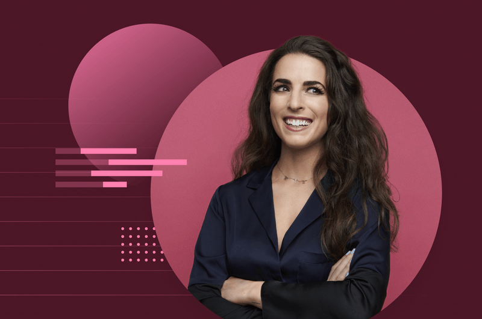
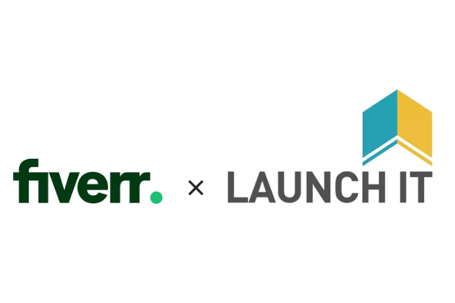
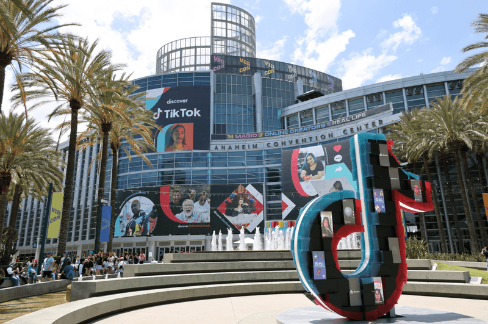

BUSINESS NEWS
Semi-Annual Small
Business Needs
Strength and Optimism is
Still Present
By
Fiverr Team
|
April 15, 2021

The past year was one that no small business could have
prepared for as the COVID-19 pandemic forced worldwide
stay-at-home orders and subsequent shutdowns. On top of
their usual expectations to adapt to changing customer
needs, many had to figure out how to digitally transform in
order to survive. Now, over one year into the pandemic,
many are still operating online or with limited in-person
capacity.
Despite this, we’ve also seen strength and resilience in small
businesses and entrepreneurs. Businesses are building back
and finding new ways to reach their customers, people are
still creating, and most importantly, recovery is in sight.
Millions of small business owners from around the world
search every day for the things they need on Fiverr. The
services they are looking for and search terms they use
allow us to predict what’s important, what’s trending and
what’s next for small businesses. When looking at services
that have seen a significant increase in search over the past
six months, five major global themes emerged. It is evident
that these are areas where small businesses and
entrepreneurs are focusing their efforts in order to to
rebuild, to pivot and for some, to even start fresh.
Choosing Your Digital Storefront - Whether it is Amazon
, Shopify, or Wordpress, Small Businesses are looking to
create and optimize their digital presence
- Amazon virtual assistant, 778%
- Shopify store design, 302%
- Shopify sales funnel, 103%
- Website design wix, 102%
- Wordpress theme customization, 63
How to Recover and Building Back - One year into the
pandemic building back is top of mind, starting with a focus
on stronger finances and higher profits.
- Food delivery app, 117%
- Crowdfunding, 115%
- Quickbooks, 83%
- Bookkeeping, 40%
- Accounting, 33%
Creativity Becomes Cash - Whether they are following a
passion or simply trying a new way to earn extra income,
many creatives are turning their creativity into businesses.
This is particularly evident in fashion.
- Food delivery app, 117%
- Crowdfunding, 115%
- Quickbooks, 83%
- Bookkeeping, 40%
- Accounting, 33%
How to Recover and Building Back - One year into the
pandemic building back is top of mind, starting with a focus
on stronger finances and higher profits.
- Amazon virtual assistant, 778%
- Shopify store design, 302%
- Shopify sales funnel, 103%
- Website design wix, 102%
- Wordpress theme customization, 63
ow to Recover and Building Back - One year into the
pandemic building back is top of mind, starting with a focus
on stronger finances and higher profits.
contact

News

